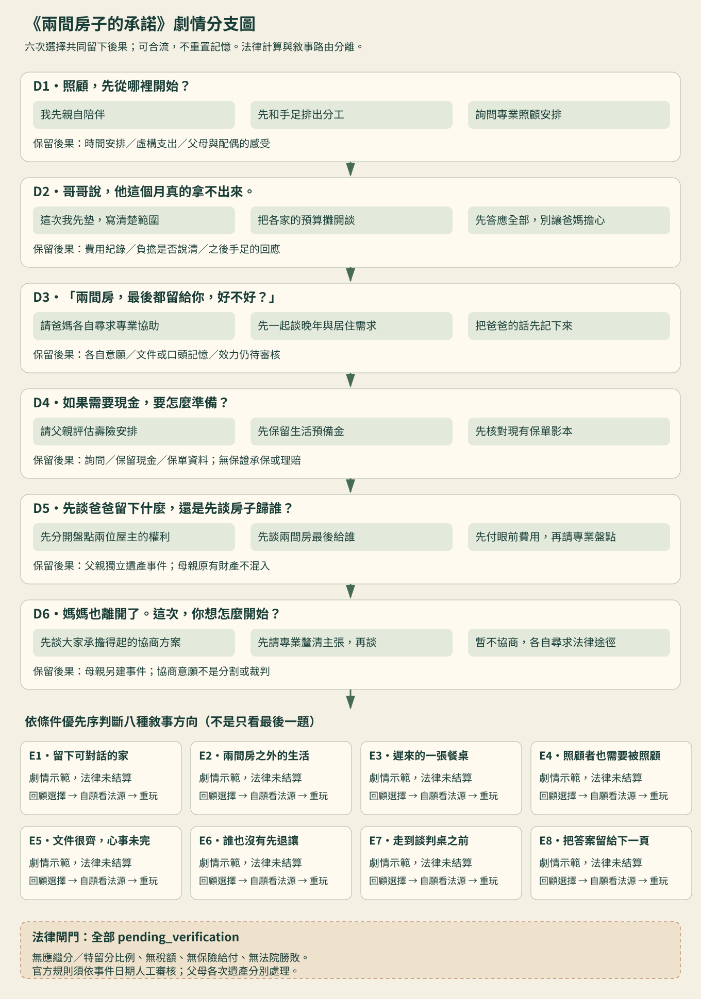

《傳承人生劇場》第一卷設計評審
2026-10-24・先確認美術、閱讀與劇情，再決定正式開發。
這是獨立有限互動原型；不改正式經營模式，不讀寫 State v4。八種都是敘事示範結局；沒有正式法律計算、分產、稅額、保險給付或裁判。原型進度只在記憶體中，重新整理即清除。


畫面：人物先說完，再作一個決定
查看桌面與手機的選擇畫面


第一卷・六次選擇，八種敘事方向
照顧、預算、父母心願、現金與保單、父親遺產盤點、母親離世後如何談。前期的選擇會留在後期對話、支出與記憶中，不只改最後一張結局標籤。


結局清單
- 留下可對話的家
- 兩間房之外的生活
- 遲來的一張餐桌
- 照顧者也需要被照顧
- 文件很齊，心事未完
- 誰也沒有先退讓
- 走到談判桌之前
- 把答案留給下一頁
條件、教育目標、優先序及正式法律分支的閘門見 第一卷完整規格。
交付與尚待完成
- 已製作：六角色與四景的原創概念素材、逐段對話、六次決策、條件回應、八個敘事結局、法律導讀、選擇回顧、重新挑戰及三字級。
- 素材狀態：仍是概念佔位；各角色只有一種表情，沒有正式表情、動畫、換裝或跨年造型。
- 法律狀態：現有規則全部 draft，無 approved；事件日期、文件、契約及權利需人工核實。未啟用任何確定法律效果。
- 尚未完成：正式 React/TS 接入、永久圖鑑／勳章／存檔、雲端、音樂配音與後四卷；本次未改經營模式。
- 時長目標5–10分鐘尚待玩家實測；未做實體 iOS/Android、讀屏或40歲以上玩家驗收。